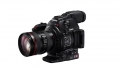
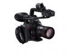
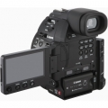
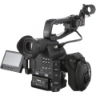
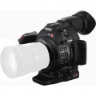

器材库 > 高清摄像机 > EOS C100 Mark II

规格总览
发布日期
2014-10-22
HD
1080p
影像传感器
影像传感器
CMOS
影像传感器数量
1
影像传感器尺寸
等效Super 35mm
总像素
约984万像素万
有效像素（动态模式）
约829万像素万
镜头和对焦
镜头
佳能EF卡口
对焦系统
手动对焦/单次自动对焦（全像素双核CMOS AF）/连续自动对焦（全像素双核CMOS AF）面部优先自动对焦（仅限STM镜头）
拍摄性能
录制格式-视频
MPEG-4 AVC/H.264
录制格式-音频
线性PCM（16bit/48kHz/2通道）* 选择28Mbps/24Mbps LPCM时 Dolby Digital 2通道* 选择28Mbps/24Mbps/17Mbps/7Mbps时
视频尺寸
分辨率1,920×1,080像素 （59.94Hz模式：29.97P/23.98P；50.00Hz模式：25.00P）
内置麦克风
是
内置喇叭
是
时间码记录
丢帧*或非丢帧，Rec run,Free run,重新生成 *仅限59.94Hz模式下的59.94（i/P）29.97P模式
液晶屏/取景器
LCD尺寸
3.5英寸
LCD像素
123万
LCD类型
OLED LCD
LCD特性
翻转屏
存储规格
存储卡
SD/SDHC, SDXC
电源
电源（电池/电源适配器）
7.4V DC（使用电池:BP-955），8.4V DC（使用外接电源）
耗电量
9.4W（AVCHD 50P/28Mbps/电子取景器/OLED显示屏）W
机身规格
颜色
黑色
尺寸
约147×174×169 mm（含指枕）mm
重量
约1,125克g
macxu2015-03-12 11:084.19 分
操作性 4.00功能性 3.50美观性 4.50趣味性 4.50耐用性 4.50性价比 3.50解像力 4.50色彩还原 4.50
产品图 / 样片




评测 / 相关文章
- 详细内容 （存档）